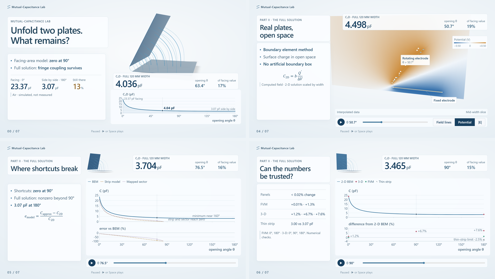

Mutual-Capacitance Lab
rendered previews
Every image is a real Chromium / WebGL2 render of the current build, not a design mock-up. Click an image for full resolution. Values are simulated electrostatics with stated limits, not measurements.
